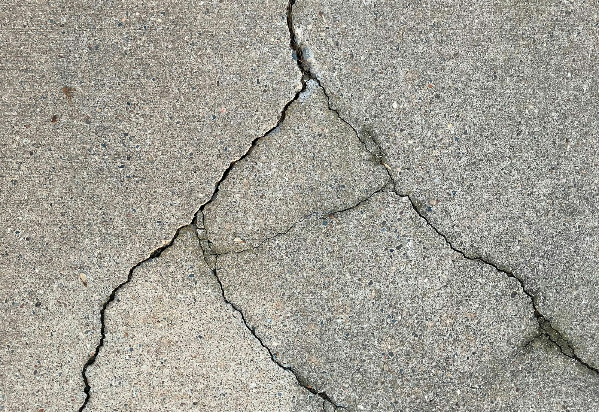
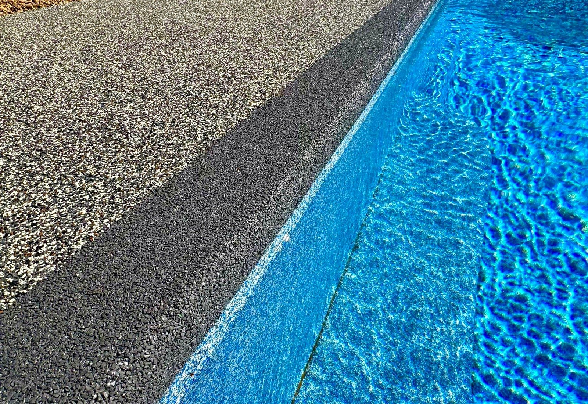

Pool Deck Signature
Cooler, softer, slip-resistant rubber surfacing for pool decks, coping edges, splash zones, and barefoot paths.

East Texas pool deck specialists
Cooler on bare feet, softer underfoot, slip resistant around water, and finished with custom color blends that make worn concrete feel like a resort upgrade.

What you are buying
ProCoat is not paint, stain, or a thin cosmetic coating. The system pairs premium rubber granules with resin, then installs over properly prepared concrete to create a seamless, textured surface around pools, patios, garages, and commercial spaces.
Before and after
Drag the handle to compare tired, cracked concrete against the high-grip ProCoat finish. This is the moment homeowners understand what they are really buying.


The upgrade clients feel
A surface transformation should be obvious in seconds. ProCoat turns damaged concrete into a cooler, safer, easier-to-clean finish that looks intentional from every angle.
Signature systems
Cooler, softer, slip-resistant rubber surfacing for pool decks, coping edges, splash zones, and barefoot paths.

Custom patio and entertainment-area coatings that make outdoor kitchens, lounges, and walkways feel designed.

Durable flake and coating systems for garages, shops, showrooms, sport courts, splash pads, and daily-use spaces.
Why rubber pool decks are different
Most homeowners are comparing coatings, stains, epoxy, spray texture, and bare concrete without knowing what actually changes day-to-day comfort around a pool.
Real project photos
ProCoat combines advanced polymer resins with premium rubber EPDM granules to create a durable, fade-resistant, non-skid surface. The finish adds grip and comfort while giving the space a clean, finished look.
Premium surface systems
Comfortable bare-foot surfaces with grip where water, kids, and pets are part of the daily routine.
A clean flake finish that handles vehicles, tools, tire traffic, and weekend projects.
Durable, color-stable surfaces that make outdoor kitchens, walkways, and lounges feel complete.
Where ProCoat works
Cooler, safer footing around water with custom color blends and a clean finished edge.
High-impact flake systems that upgrade daily-use garages, shops, and hobby spaces.
Weather-ready surfaces for outdoor kitchens, entertainment spaces, and walkways.
Showrooms, splash pads, sport courts, daycare spaces, and retirement communities.


Why homeowners choose ProCoat
A cooler, softer surface makes the pool feel more usable all summer.
Added traction helps wet areas feel more controlled without looking industrial.
Stains, patchwork, and tired gray slabs get replaced with a finished outdoor-living look.
The system is selected for pool decks, patios, and spaces that take daily sun and cleanup.
Built the right way
We review photos, measurements, access, drainage, cracks, heat exposure, and the way your family uses the space.
Color direction, border ideas, finish texture, and project phasing are selected before the installation window.
The surface is cleaned and mechanically prepared so the new system bonds to the concrete beneath it.
Rubber granules, resin, and finish details are installed with a clean edge and consistent troweled texture.
The space is returned as a cooler, softer, easier-to-clean surface built for wet feet, heat, pets, and parties.
Surface compatibility
Every project is inspected first, but many worn surfaces can be transformed after the right prep instead of being torn out.
Color and finish direction
Choose a blend that complements brick, stone, siding, water color, landscape, and garage interiors. During the quote, ProCoat helps narrow the finish so the surface looks deliberate from day one.
View project galleryProject-friendly financing
Ask about financing options during your estimate. ProCoat can walk through scope, timing, finish choices, and monthly payment paths when available.
Estimate concierge
Start with photos of the concrete, pool edge, drainage, cracks, and surrounding finishes so the first conversation is useful.
Get a color and texture recommendation that fits the home, pool water, stone, brick, landscape, and lighting.
Walk away with project scope, timing expectations, financing questions, warranty details, and what needs to happen before install.
ProCoat seal of approval
Get a surface designed for East Texas heat, daily use, wet feet, pets, and heavy cleanup. Ask about color options, project timing, and warranty details during your quote.
Start my quoteLocal service areas
ProCoat builds rubber pool decks, patios, garages, and commercial coatings for homeowners and property teams across the region.
Quote confidence
Every outdoor surface can warm up in direct sun, but rubber surfacing is selected for a cooler, more comfortable barefoot feel than many hard concrete finishes.
The system is designed with a textured, non-skid profile for wet areas like pool decks, splash pads, and patios.
Yes, many projects are installed over existing cracked or damaged surfaces after proper inspection and preparation.
Timing depends on square footage, repairs, weather, and access, but most residential projects are planned during the estimate after inspection.
The finished surface is made for heavy cleanup and can be pressure washed up to 4000 PSI.
Yes. ProCoat can recommend a blend that fits the home, pool, patio, garage, or commercial environment.
Cost depends on size, surface condition, prep, finish choice, and project complexity. The fastest path is a free estimate with photos or an onsite review.
ProCoat offers a lifetime warranty against chipping, peeling, or fading. Ask for full warranty details with your quote.
Ready when you are